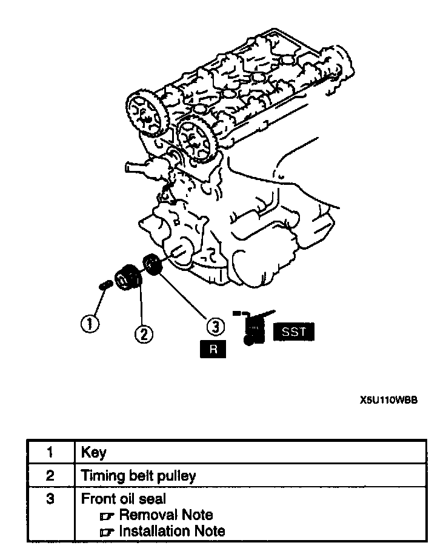
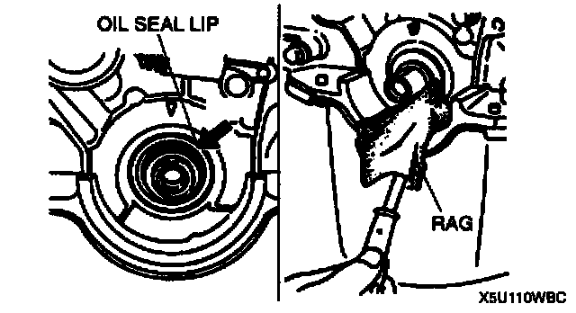
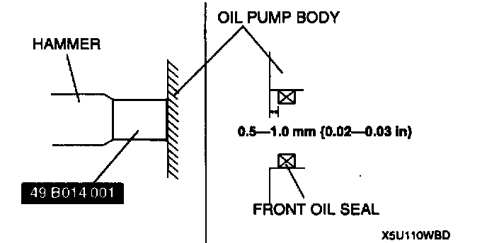

Front Crankshaft Seal: Service and Repair

FRONT OIL SEAL REPLACEMENT
1. Remove the timing belt.
2. Remove in the order indicated in the table.
3. Install in the reverse order of removal.
Front Oil Seal Removal Note
1. Cut the oil seal lip by using a razor knife.

2. Remove the oil seal by using a screwdriver protected with a rag.
Front Oil Seal Installation Note
1. Apply clean engine oil to the oil seal lip.
2. Push the oil seal slightly in by hand.

3. Tap the oil seal in evenly by using the Special Service Tool (SST) and a hammer.